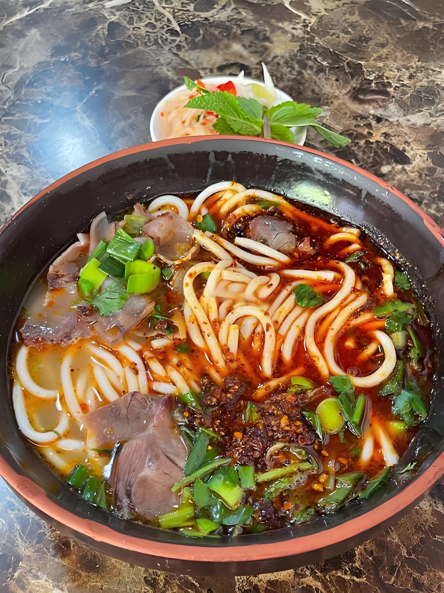
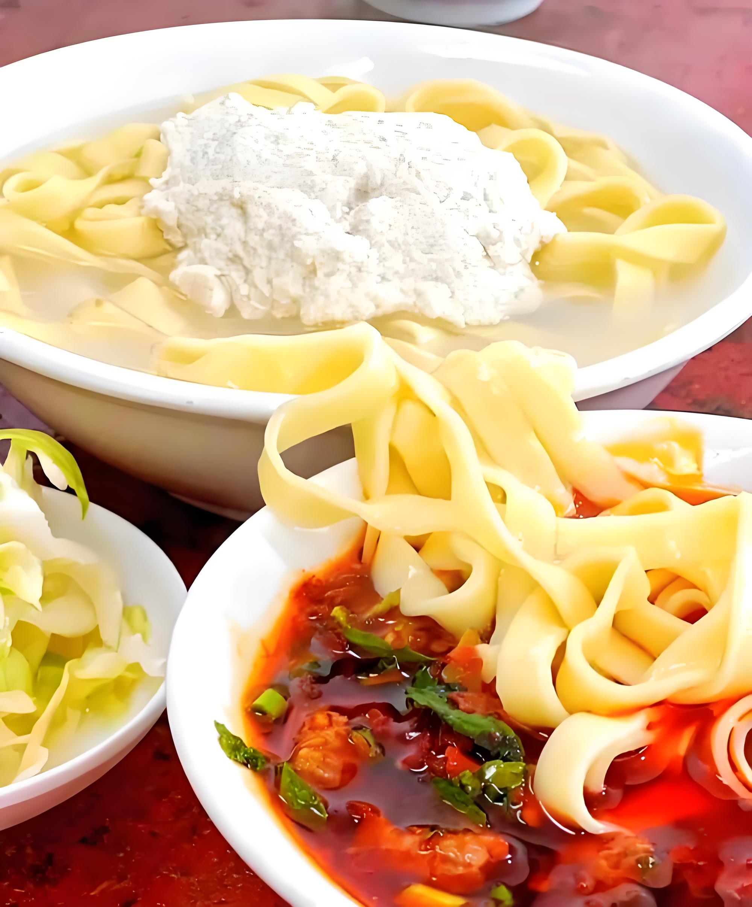

红色圣地 · 醉美遵义
自然景观
世界自然遗产
赤水丹霞
中国最美丹霞地貌，瀑布成群，丹霞绝壁壮观
丹霞地貌
瀑布成群
世界遗产
建议游览：1-2天
赤水市
红色圣地
娄山关
黔北第一险要，红色革命圣地，雄关漫道真如铁
雄关险峻
红色文化
自然风光
建议游览：半天
汇川区
亚洲第一长洞
双河溶洞
亚洲最长溶洞，地下奇观，地质博物馆
溶洞奇观
地下世界
地质遗产
建议游览：3小时
绥阳县
人文风景
红色圣地
遵义会议会址
中国革命转折点，全国重点文物保护单位
红色文化
历史遗址
爱国主义基地
建议游览：1-2小时
红花岗区
千年古镇
土城古镇
千年古镇，四渡赤水纪念馆，历史文化浓厚
千年古镇
红色文化
民俗风情
建议游览：半天
习水县
美食推荐

特色小吃
遵义羊肉粉
鲜香浓郁，粉滑肉嫩，贵州第一名小吃

地方特色
豆花面
软嫩豆花配秘制蘸水，遵义人早餐首选
传统糕点
遵义鸡蛋糕
香甜松软，百年老字号，伴手礼首选
交通出行
如何到达
航空
遵义新舟机场 / 茅台机场，通达全国
铁路
高铁直达，渝贵铁路、成贵高铁过境
公路
高速网络密集，自驾出行便利
主要路线
遵义市区 → 娄山关
约50公里，1小时车程
遵义市区 → 赤水丹霞
约200公里，2.5小时车程